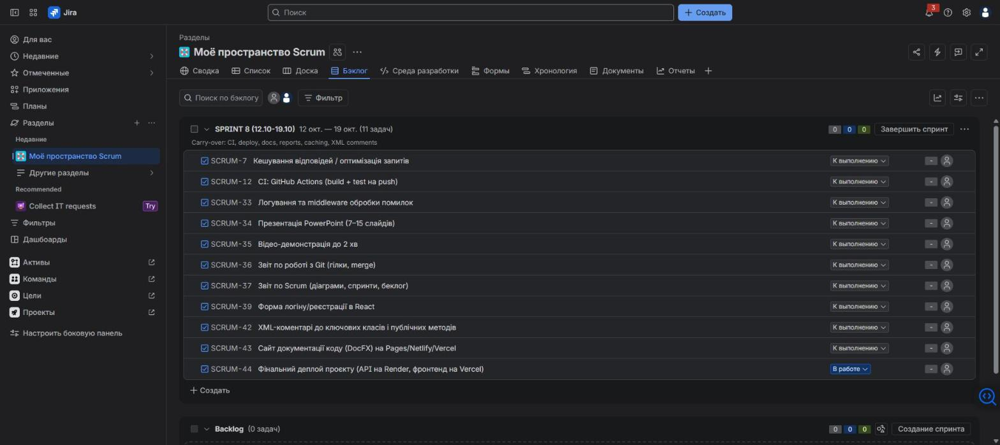

| № | Дати | Ціль |
|---|---|---|
| 1 | до 14.09 | SRS, архітектура, CRUD |
| 2 | 31.08–06.09 | Початок розробки, ролі |
| 3 | 07.09–13.09 | Замовлення, Customer |
| 4 | 14.09–20.09 | Деплой, фронтенд, i18n |
| 5 | 21.09–27.09 | MVP, авторизація |
| 6 | 28.09–04.10 | Кабінет, адмін, тести |
| 7 | 05.10–11.10 | Інтерфейс, безпека |
| 8 | 12.10–19.10 | активний: CI, ZAP, захист |
